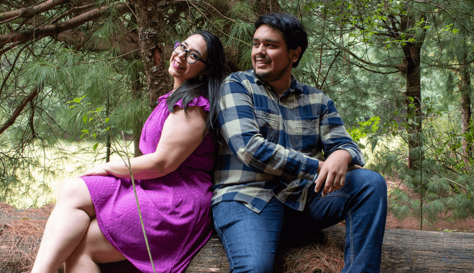
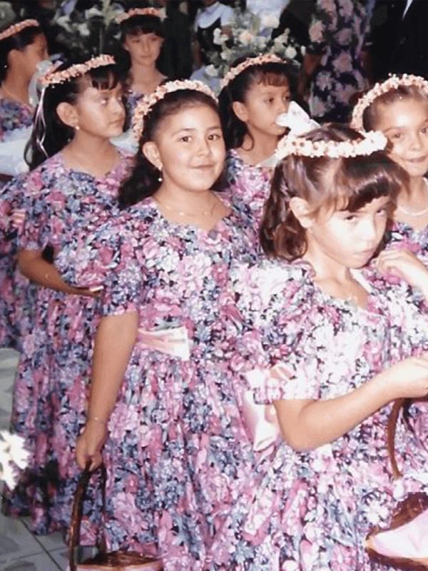

«Sí, el Señor hará grandes cosas por nosotros, y eso nos llenará de alegría.»
Salmos 126:3
Dios nos ha dado mucho más que una historia de amor; nos dio un compañero de vida para caminar en sus propósitos. Nuestro deseo es honrarlo consagrando nuestro matrimonio delante de Él y las personas que amamos, como tú.
25.diez.25
 Iglesia Nacional Presbiteriana
Iglesia Nacional Presbiteriana
Puerta de Salvación
Agrícola Chimalistac, CDMX
Café de Bienvenida
Queremos recompensar tu puntualidad con un espresso, latte o tu café favorito. Anticipa tu llegada y disfruta tu bebida. Comenzaremos el servicio puntualmente –dicen que la novia es medio intensa.
Servicio y Ceremonia
Más que una ceremonia, ¡tendremos un culto de alabanza! Estamos profundamente agradecidos con Dios por unir nuestras vidas y queremos expresarlo por medio de este servicio.
Celebración
Al terminar el servicio, acompáñanos a celebrar con una fiesta de jardín en el exterior del templo. Podremos compartir abrazos, risas y ¡unos deliciosos tacos! Avalados especialmente por el novio.

RSVP
¡Confirma tu asistencia! Respóndenos antes del 31 de julio a través del enlace en tu invitación digital.
Dress Code
Garden Party
Nos encantaría ver colores vibrantes, texturas geométricas y florales.
Pero siéntete libre de elegir tu outfit favorito, apropiado para la ocasión.


Criaturas
¡Los niños son bienvenidos!
Tendremos espacios para ellos. Solo pedimos a los padres que supervisen a sus hijos en todo momento durante el culto y la fiesta.